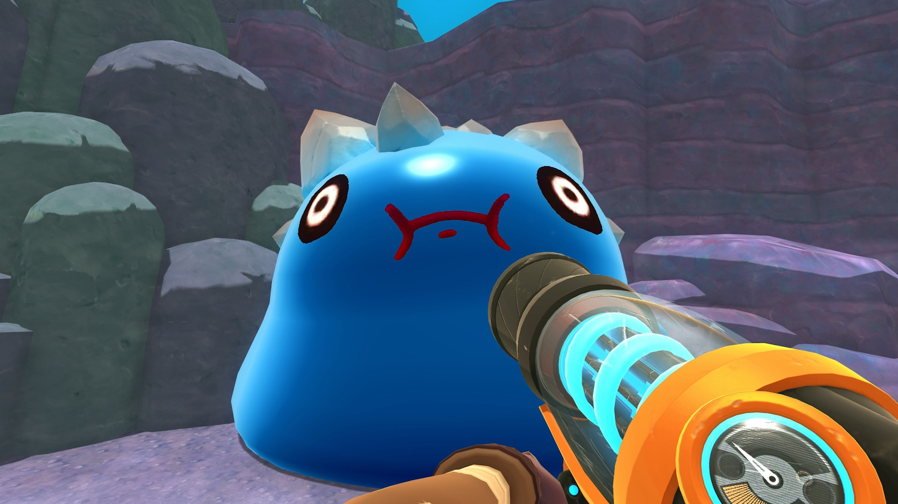
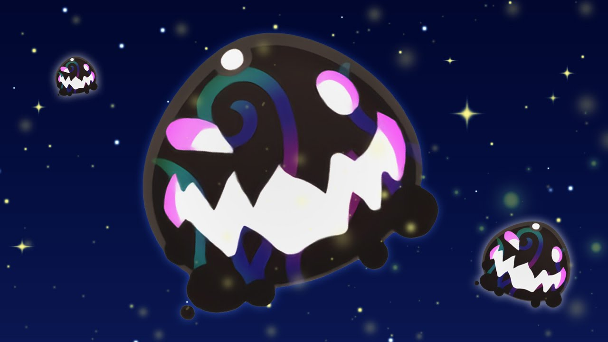

Para começar devemos entender o que são essas gosmas e o que elas tem de tão especial:
Slimes são criaturas alienígenas gelatinosas, em forma de bola e adoráveis que vivem em um
planeta distante chamado Far, Far Range . Eles são um elemento-chave dentro do jogo, pois são
responsáveis pela produção de plorts que são usadas para ganhar dinheiro , criar gadgets
e desbloquear áreas no jogo.
Existem várias espécies diferentes de slimes, cada uma encontrada em determinados locais no
Far, Far Range . Embora suas características mais comuns sejam as expressões felizes
permanentes que eles têm em seus rostos quando alimentados e suas vozes agudas, cada tipo
de slime tem uma característica única que é usada para identificá-lo.
Juntando as duas versões do jogo
é possível encontar mais de 40 variações de slimes.
A imagem abaixo mostra todas as versões base do jogo original:
|
Gordo Slimes são gigantes, estacionários Slimes . Eles não podem interagir diretamente com eles nem podem ser movidos, mas podem ser alimentados com grandes quantidades de comida para estourá-los. Existem atualmente 16 Gordos selvagens em áreas específicas no Far, Far Range . Eles podem segurar uma Chave de Slime ou revelar um Teletransportador Estático . Gordos também podem ser gerados em um Gadget Site , iscando um Gordo Snare com Food . Snared Gordos não possuem chaves. |
 |
|  |
Os Tarr , referidos pela leitura do HUD como Tarr Slime , são Largo Slimes que comeram um plort que não produziu, transformando-o em uma abominação hostil que consome outros slimes e se replica ao fazê-lo. Devido a isso, eles podem aparecer em qualquer lugar a qualquer hora do dia e é uma das principais ameaças a um rancho, a menos que você esteja no modo Casual. Eles são fracos a água, e durante o dia um único respingo é suficiente para despachá-los. |